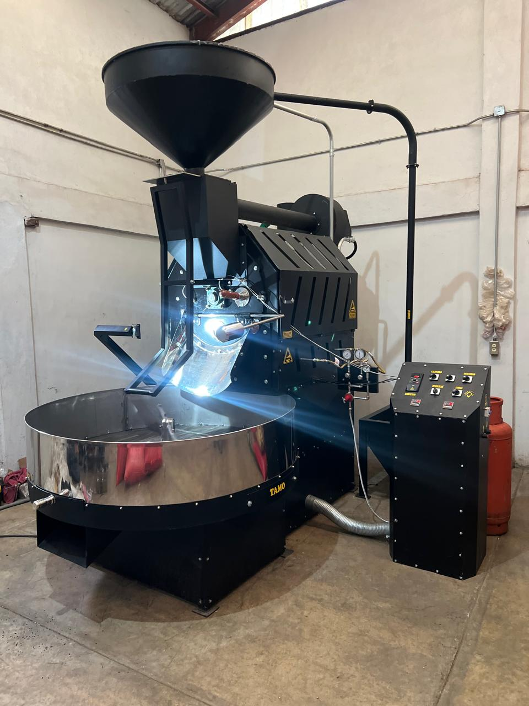

Más que café,
Ciencia, Arte & Pasión.
Explora recetas de extracción de precisión, guías interactivas para baristas y servicios de maquila y tueste colaborativo en Marco's Coffee.
100%
Arábica Especialidad
85+
Puntaje de Cata
Global
Educación de Café
Recetas de Café de Especialidad
Selecciona un método para abrir la calculadora y la guía interactiva.
Perfect Espresso Doppio
Extracción balanceada y dulzura natural. 18.0g de café para 34.0g en taza.
Italian Bicerin
Bebida tradicional de Turín con capas de chocolate denso, espresso y crema fría.
V60 Pour Over
Resalta acidez brillante y notas florales con un ratio 1:16.
Educación Profesional
Programas diseñados para llevar tu conocimiento del café al siguiente nivel, desde la extracción en barra hasta la ciencia del tueste.
Barismo
Técnicas de extracción, calibración de molinos, flujos de trabajo eficientes y texturizado de leche.
Curso de Tostado
Física y química del tueste, transferencia de calor, desarrollo de perfiles y control de curvas.
Consultoría
Asesoría especializada para diseño de barras de especialidad, selección de equipos y optimización de negocio.
¿Buscas una sesión personalizada?
Agenda una consulta directa con Marco vía WhatsApp.
Tostaduría y Orígenes de México
Tostamos cuidadosamente lotes de especialidad de origen 100% mexicano, explorando perfiles naturales, honey y fermentados de diversas regiones cafetaleras de México.

Variedades y Procesos de México
Finca El Triunfo (Bourbón / Typica)
Notas intensas a frutos rojos maduros, vino tinto y cacao amargo con postgusto prolongado.
Pluma Hidalgo Selección (Pluma Coffe)
Dulzor pronunciado a piloncillo, panela, notas cítricas a naranja dulce y cuerpo sedoso.
Finca Altas Cumbres (Typica / Catura)
Perfil aromático complejo con notas a durazno en almíbar, chocolate con leche y jazmín.
Jala Altitud (Marsellesa / Sarchimor)
Acidez málica brillante, notas a manzana verde, yogur y vainilla con taza sumamente limpia.
Co-Roasters & Maquila
Espacio de tueste y empacado colaborativo diseñado para marcas de café nuevas o ya posicionadas que buscan infraestructura profesional sin la inversión inicial de una planta propia.
Renta de Maquinaria y Espacio
Acceso a tostadoras industriales de precisión y área especializada de empacado bajo estrictos estándares de control de calidad. Ideal para escalar producción de forma inmediata.
Acompañamiento Experto
Elige entre rentar exclusivamente el espacio para operar por tu cuenta, o ir de la mano con Marco en todo el proceso: desarrollo de perfiles, control de tueste y optimización de empaque.
¿Listo para llevar tu marca al siguiente nivel?
Cotiza disponibilidad de turnos de tueste y asesoría personalizada.